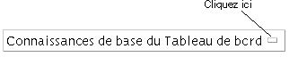
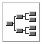

Outre la structure de livre traditionnelle, il existe d'autres manières de naviguer dans une bibliothèque d'informations. Vous pouvez, par exemple, lire les livres d'une bibliothèque en suivant les liens menant à des informations connexes. Vous pouvez aussi utiliser les fonctionnalités Historique et Carte pour localiser les informations désirées.
Ce chapitre offre des informations sur:
Il est également possible de rechercher rapidement des informations sur un élément spécifique. Consultez la section
Les liens hypertexte vous permettent de vous déplacer rapidement et aisément d'une section à une autre, voire même d'un livre à un autre. Au fil de vos déplacements dans un livre ou même dans toute une bibliothèque, il est relativement facile de perdre de vue votre position actuelle. Pour identifier rapidement votre position actuelle, procédez de la manière suivante:
Points d'implantation. Voir
Historique automatique (la Liste de livres). Voir
Affichage de la section précédente (l'Historique). Voir .
La carte graphique. Voir
Chaque livre et chaque section de livre est associée à un identificateur unique nommé point d'implantation. Le Gestionnaire des informations vous permet d'afficher les points d'implantation et de les utiliser pour accéder aux sections qu'ils identifient.
Pour afficher le point d'implantation du livre et de la section que vous visualisez actuellement, choisissez Afficher le point d'implantation sur le menu Explorateur. Le Gestionnaire des informations affiche le point d'implantation dans la zone de message au bas de la fenêtre.
Pour retourner à une section par la suite, vous pouvez enregistrer son point d'implantation puis le spécifier à l'aide d'Ouvrir le point d'implantation.
Pour retourner à une section dont vous avez précédemment consulté le point d'implantation à l'aide d'Afficher le point d'implantation, choisissez Ouvrir le point d'implantation sur le menu Aller. Le Gestionnaire des informations affiche la boîte de dialogue suivante pour vous permettre de spécifier le point d'implantation de la section.
Spécifiez le point d'implantation de la section vers laquelle vous déplacer.
Cliquez sur Appliquer pour aller à cette section et laisser la boîte de dialogue ouverte; cliquez sur OK pour aller à la section et refermer la boîte de dialogue.
Dans le Gestionnaire des informations, les liens hypertexte sont représentés par du texte gras, souligné et coloré. Les liens vous permettent de procéder à des “sauts” rapides vers
D'autres parties de la section en cours
D'autres sections du même livre
D'autres livres de la bibliothèque d'informations
Pour suivre un lien dans la fenêtre de lecture, positionnez le pointeur sur le texte du lien et cliquez. Pour suivre un lien dans une fenêtre de liste (telle que celle de l'Historique des sections), positionnez le pointeur sur le lien et cliquez deux fois.
Lorsque vous suivez un lien à partir d'une fenêtre de lecture non ancrée, le Gestionnaire des informations remplace la section en cours par la nouvelle. Si la fenêtre de lecture est ancrée, le Gestionnaire des informations ouvre une nouvelle fenêtre de lecture pour afficher la nouvelle section.
A partir de la fenêtre de lecture, vous pouvez prévisualiser la destination d'un lien avant de décider de le suivre. Pour afficher le titre de la section cible:
Positionnez le pointeur sur le lien.
Appuyez sur le bouton gauche de la souris et maintenez-le enfoncé. Le Gestionnaire des informations affiche la destination du lien dans la zone de message du bas de la fenêtre.
Pour suivre le lien, relâchez le bouton de la souris. Si vous décidez de ne pas suivre le lien, éloignez le pointeur du lien avant de relâcher le bouton de la souris.
Dans certains cas, vous souhaiterez probablement repasser à une section consultée préalablement au cours de votre session d'exploration. Pour revoir des sections antérieures, choisissez une des méthodes suivantes:
La liste Historique des sections. Voir
Flèches de l'Historique. Voir
Le Gestionnaire des informations affiche l'enregistrement chronologique de tous vos déplacements dans les sections visitées au cours de la session d'exploration actuelle. Pour vérifier rapidement les sections déjà lues, ouvrez la liste Historique des sections, représentée par la figure suivante.
La liste Historique des sections inclut chaque section visitée, de la plus récente à la plus ancienne. Si vous avez consulté une section plusieurs fois par session, le Gestionnaire des informations ne la liste qu'une fois.
Pour utiliser la liste Historique des sections:
Choisissez Historique sur le menu Aller de la fenêtre de lecture. Le Gestionnaire des informations affiche la liste Historique des sections.
Pour passer à une section de la liste, cliquez deux fois sur son titre ou affichez ce titre en surbrillance, puis cliquez sur Afficher. Si la fenêtre de lecture n'est pas ancrée, le Gestionnaire des informations remplace la section en cours par la nouvelle. Si la fenêtre de lecture est ancrée, le Gestionnaire des informations ouvre une autre fenêtre de lecture pour afficher la nouvelle section.
Pour refermer la liste Historique des sections sans passer à une section préalablement visualisée, cliquez sur Fermer.
Vous souhaiterez probablement vous déplacer vers l'arrière ou vers l'avant parmi la série de sections préalablement consultées. Utilisez les flèches de l'Historique de la fenêtre de lecture pour vous déplacer parmi les sections déjà lues, dans l'ordre de lecture initial. Les flèches de l'Historique apparaissent au début de la barre d'outils de la fenêtre de lecture, à gauche des flèches de parcours normales.
Vous pouvez exécuter les mêmes fonctions en choisissant
les options
Si vous avez consulté plusieurs fois la même section au cours de votre session d'exploration, les flèches de l'Historique en feront de même.
La flèche vers la gauche de l'Historique vous déplace en arrière dans la liste des sections (vers le début); la flèche vers la droite vous déplace vers l'avant (vers la fin de la liste).
Si vous vous trouvez au début de la liste des sections, les flèches vers la gauche ou vers la droite de l'Historique ne sont plus disponibles, indiquant que vous ne pouvez aller plus dans cette direction.
Il se peut que vous souhaitiez obtenir des informations d'ordre plus général que celles de la section en cours, ou une meilleure perspective du niveau des informations à consulter. En d'autres termes, imaginons que vous souhaitez visualiser la liste des sections précédant la section en cours dans la structure du livre.
Pour afficher la liste des sections précédentes, cliquez sur le bouton de titre de section, juste en dessous de la zone d'affichage.
Le Gestionnaire des informations affiche la liste des titres de section.
Vous pouvez remonter dans cette liste jusqu'au nom de la bibliothèque contenant le livre de la section.
Les deux éléments supérieurs de la liste représentent le rayon et la bibliothèque d'informations. N'identifiant ni l'un ni l'autre une section spécifique, ils ne peuvent être sélectionnés.
Pour passer à une section quelconque de la liste, cliquez sur son titre. Si la fenêtre de lecture n'est pas ancrée, le Gestionnaire des informations remplace la section en cours par la nouvelle. Si la fenêtre de lecture est ancrée, le Gestionnaire des informations ouvre une autre fenêtre de lecture pour afficher la nouvelle section.
Pour refermer la liste des sections sans passer à une autre section, cliquez une nouvelle fois sur le bouton de titre de section.
Pour vous orienter dans la structure d'un livre, vous pouvez afficher une carte graphique de ses sections. La carte constitue une sorte d' arborescence graphique qui affiche les titres des sections du livre. La carte facilite la compréhension de la structure d'ensemble du livre.
Pour afficher la carte, cliquez sur le bouton Carte graphique de la barre d'outils de la fenêtre de lecture ou choisissez Carte graphique à partir du menu Fenêtres.
Le Gestionnaire des informations ouvre la carte graphique, affichant le titre de la section en cours et les titres des autres sections du livre.
Pour afficher les titres de section actuellement invisibles, procédez à un panoramique au travers de la carte. Cette fonctionnalité est très utile: les cartes sont généralement trop grandes pour être complètement affichées.
La carte graphique contient une case de panoramique dans son coin supérieur gauche, dans laquelle sélectionner la partie de la carte à afficher.
Pour réaliser un panoramique au travers d'une carte:
Positionnez le pointeur sur la zone de panoramique de la carte des sections locales.
Appuyez sur le bouton gauche de la souris et maintenez-le enfoncé.
Faites glisser la souris de manière de manière à afficher la partie de la carte à consulter. Par exemple, déplacez la zone de panoramique vers la droite pour afficher les titres dissimulés par le bord droit de la carte.
Si vous préférez, vous pouvez ajuster la taille de toute la carte graphique en redimensionnant la fenêtre.
Pour afficher une section représentée sur la carte graphique, cliquez sur le titre de cette section. Si la fenêtre de lecture n'est pas ancrée, le Gestionnaire des informations remplace la section en cours par la nouvelle. Si la fenêtre de lecture est ancrée, le Gestionnaire des informations ouvre une autre fenêtre de lecture pour afficher la nouvelle section.
Pour actualiser la carte graphique de manière à afficher votre emplacement actuel dans un livre, cliquez sur le bouton Mise à jour automatique afin de refléter votre position chaque fois que vous vous déplacez au sein d'un livre, choisissez Préférences de carte sur le menu Options, puis activez Mise à jour automatique.